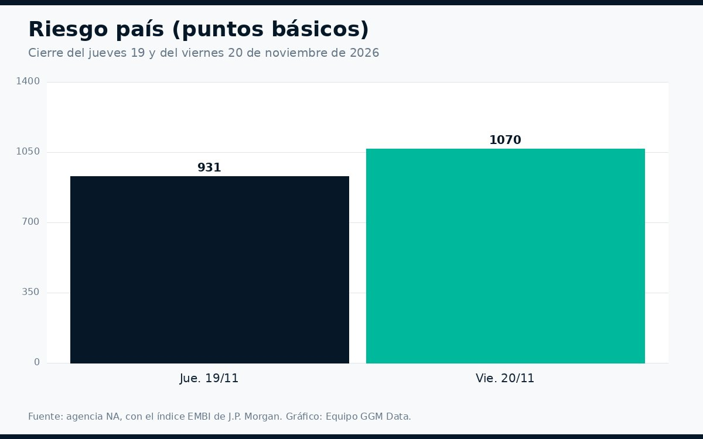

Mercados
El riesgo país bajó a 1.035 puntos en el feriado, con rebote de ADRs y bonos en Wall Street
El lunes 23 de noviembre no hubo rueda en el mercado argentino por el Día de la Soberanía Nacional. En Nueva York, el indicador de JP Morgan recortó desde los 1.070 puntos del viernes, los bonos soberanos subieron 1,5% en promedio y Globant avanzó 9,5%, según Infobae. El último cierre local de dólares y del Merval quedó en los valores del viernes 20.

Un feriado en Buenos Aires y un rebote en Nueva York
El lunes 23 de noviembre el mercado financiero local permaneció cerrado por el feriado del Día de la Soberanía Nacional. No hubo operaciones en ByMA ni en el mercado de cambios mayorista. La referencia para los activos argentinos pasó a Wall Street, que recuperó parte de lo perdido en una semana muy negativa.
Según el recuento de Infobae sobre el cierre semanal, el Nasdaq había perdido 10% en esos cinco días, el S&P 500 había cedido 10,5% y el Dow Jones de Industriales, 8%. El lunes, el mismo medio informó que las acciones de Nvidia treparon 31,6%, hasta USD 165,19, tras la reincorporación de Jensen Huang como director ejecutivo. El Nasdaq rebotó 6,5%, el S&P 500 ganó 4,7% y el Dow Jones avanzó 3,1%.
El riesgo país recortó, pero siguió arriba de los 1.000 puntos
El viernes 20 de noviembre, el riesgo país de JP Morgan había cerrado en 1.070 puntos básicos, su nivel más alto desde el 24 de octubre de 2025, después de trepar 236 unidades (28%) en la semana, de acuerdo con Infobae. Los títulos Globales en dólares cayeron 7% en esa semana y, en lo que va de 2026, los precios de la deuda pública en dólares se hundían 18% en promedio, según el mismo medio.
El lunes el indicador recortó a 1.035 puntos básicos, según Infobae, TN y Rava Bursátil: 35 unidades menos que el viernes. Durante la rueda tocó un piso de 1.015 puntos, dato en el que coinciden Infobae, Perfil y Rava. El recorte no alcanzó para perforar el umbral de los 1.000 puntos.
Los bonos soberanos en dólares rebotaron 1,5% en promedio, según Infobae y el economista Gustavo Ber, citado por ese medio y por TN. Entre los ADR y las acciones argentinas operadas en dólares, Infobae destacó a Globant (9,5%), Satellogic (7,1%), Grupo Financiero Galicia (5,5%) y Cresud (5,5%). Ber señaló que resulta relevante definir cómo se afrontará el vencimiento de renta y capital de enero, por unos USD 4.500 millones, y revisar el programa financiero de 2027. Esa cifra se consigna como declaración del analista, no como un dato auditado en esta nota.
Los dólares, con el último cierre local del viernes
Sin rueda cambiaria el lunes, las cotizaciones oficiales y mayoristas de referencia son las del viernes 20. El dólar mayorista cerró en $1.580, según Ámbito e Infobae. Gustavo Quintana, de PR Corredores de Cambio, precisó a Infobae que en la semana esa paridad subió $36,50 (2,4%), la corrección alcista semanal más importante desde la semana que terminó el 19 de junio.
En el Banco Nación, el oficial minorista cerró el viernes a $1.545 para la compra y $1.595 para la venta, de acuerdo con Ámbito e Infobae. El BCRA informó que en el promedio de entidades financieras la divisa se ubicó en $1.548,41 para la compra y $1.601,32 para la venta, según Infobae.
El dólar blue cerró la semana en $1.675 para la venta, con una suba de $105 (6,7%), según Infobae. El lunes, Ámbito relevó $1.655 para la compra y $1.675 para la venta entre operadores de la City.
Las paridades financieras también marcaron récords el viernes. Según Infobae, el contado con liquidación (CCL) avanzó a $1.794,18 (7,2% en la semana) y el dólar MEP, a $1.700,72 (7,7%). Ámbito consignó un CCL de $1.790,39, con una brecha de 13,3% frente al oficial, y un MEP de $1.682,79. Infobae estimó la brecha entre el mayorista y el CCL en 13,6%, la más amplia desde el 11 de abril de 2025, última rueda previa al levantamiento del cepo.
El lunes, sin mercado local, esas referencias se comprimieron con el rebote de los bonos en Nueva York. Ámbito ubicó el MEP en $1.701,05 (brecha de 7,7%) y el CCL en $1.719,74 (brecha de 8,8%). TN, al cierre en Estados Unidos, mencionó un MEP de $1.701 y un CCL de $1.725. Esas cifras no corresponden a una rueda de ByMA.
El Merval, las reservas y la reanudación de este martes
El índice MSCI Merval no operó el lunes. Su último cierre es el del viernes: 80.679 puntos, con una baja de 1% en la semana en pesos y de 11% medido en dólares, según Infobae, en un contexto de salto del CCL.
Las reservas internacionales del BCRA finalizaron la semana en USD 49.362 millones, con una merma de USD 187 millones, en parte por una caída de 8,7% del oro que integra los activos, de acuerdo con Infobae. El mismo medio indicó que la autoridad monetaria no intervino el viernes en el mercado de cambios y que en las otras cuatro ruedas de la semana adquirió USD 121 millones.
La plaza local reanudó las operaciones este martes 24 de noviembre. Al cierre de esta nota, esa jornada aún no había terminado, por lo que no se consignan cotizaciones de hoy.
Fuente
Infobae (cierres del viernes 20 y del lunes 23 de noviembre de 2026) · Ámbito Financiero · TN · Perfil · Rava Bursátil · JP Morgan (riesgo país, según esos medios) · Banco Nación y Banco Central de la República Argentina, según Infobae y Ámbito · Elaboración: InfoDataGGM